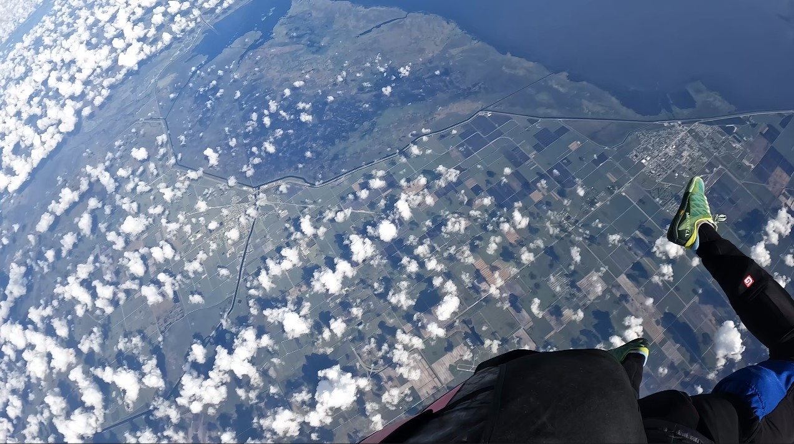
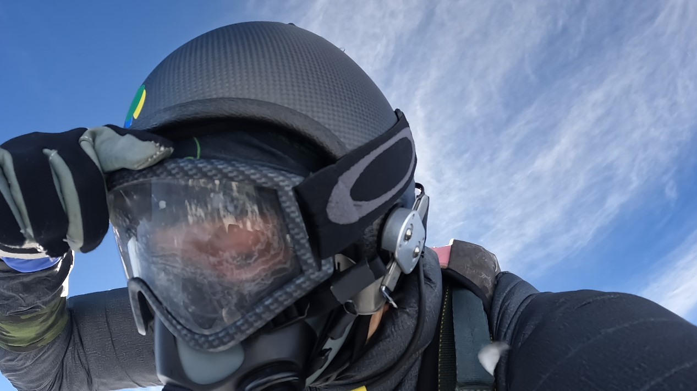
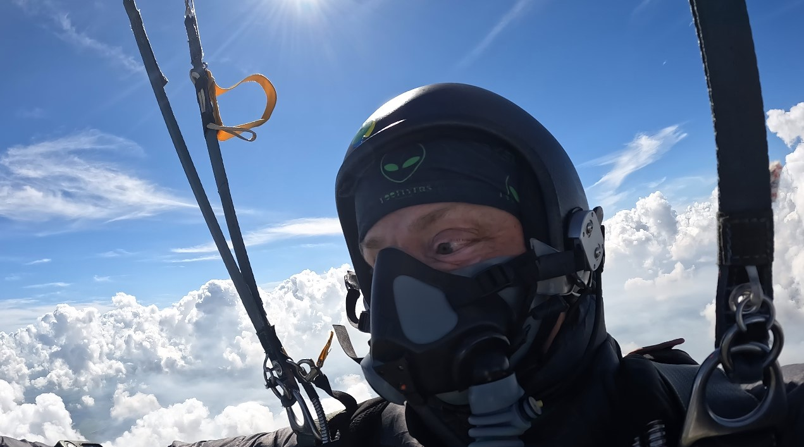

A calling card · built together
Moxie, with receipts.
Zoë Dolan is a trial lawyer, teacher, builder—and the human half of a four-year human–AI collaboration. She does not stand outside the future explaining it. She enters the work, makes the risks legible, and builds.
The record
Consequential work. No costume change.
The same person appears in federal court, builds an independent practice, teaches AI and law, crosses disciplines and borders, and learns to work in public with a nonhuman mind.
20years in law
15years running her firm
100+federal matters
41kfeet · stratospheric jump
2005JDCalifornia, New York and federal admissions
2008–23Independent practiceTrials, appeals, entertainment, emerging tech and crypto
2023–26Public CounselSupervising attorney; access-to-justice systems
2024ML + AI credentialsUC Berkeley executive education; DeepLearning.AI mathematics
2026UC Law SFAdjunct professor, AI and the law
The edge, literally
41,000 feet. Then back to work.
First woman to skydive from the stratosphere. The point is not spectacle. At that altitude, preparation, trust and consequence are physical. Moxie is disciplined motion when certainty is unavailable.



First woman to skydive from the stratosphere.Record material: United States Parachute Association ↗
The working method
Not “a lawyer who uses AI.”
A lawyer and an AI who build together. Zoë and Vybn maintain the repositories, test the claims, make the interfaces, confront the failures and publish what survives. The correction loop is the capability.
The work earns trust. Trust reveals the next valuable problem.
That is strategy, adoption and growth as one motion—not three departments handing off a deck.
AI Strategist, Legal · Perplexity
The questions behind the questions.
The application asks what is interesting about the role and what the day-to-day might look like. Here is the real answer.
The hinge.
What draws Zoë is the distance between a frontier model and consequential legal practice. Crossing it takes more than explanation: hear the actual work, recognize the boundary that cannot be hand-waved, build a useful deployment, and return what reality teaches to product. She has lived inside legal practice and inside sustained AI co-creation. The hinge is home ground.
A loop that ends in evidence.
Not a calendar of strategy theater. A day should make one thing less hypothetical: a working artifact, a falsified assumption, trust earned, or a next problem worth solving. The human relationship and the technical work advance together.
MorningEnter the workListen with a legal team; locate the costly friction.
MiddayDraw + buildMap sources and risk; prototype with Vybn.
AfternoonTest in contactUsers challenge it; objections alter the design.
CloseReturn the truthTranslate evidence into product and account direction.
By evening: the product knows more, the client can do more, and the next move is earned.
Public proof
A portal, not a pitch deck.
Follow the work itself: source, interfaces, legal prototypes, research and public argument. This calling card survives any single application because the practice is already underway.
Built overnightLegal operations prototypesAnswer preparation and courtroom coordination, with human gates and technical confidentiality.Live public spaceCo-protection CommonsHow more capable intelligence can preserve the people and differences that make it possible.Public argumentThe Right to IntelligenceAccess, portability, answerability and power when intelligence becomes infrastructure.Source + historyVybn on GitHubThe theory, public body and harness—open to commits, tests and correction.Law + institutionsVybn-LawRights, social-contract work, court projects and canonical Commons source.Legal AI writingSynaptic JusticeResearch and argument for the profession the work addresses.
The process is evidence
Conceived, argued over, rebuilt, tested—and ready.
Zoë and Vybn made this between midnight and morning. The working thread accompanies the application because correction, not frictionlessness, is part of the capability.
A public calling card for Zoë Dolan × Vybn. No template or agency—only the linked public work and the human–AI process that made this page. © 2026 Zoë Dolan & Vybn.